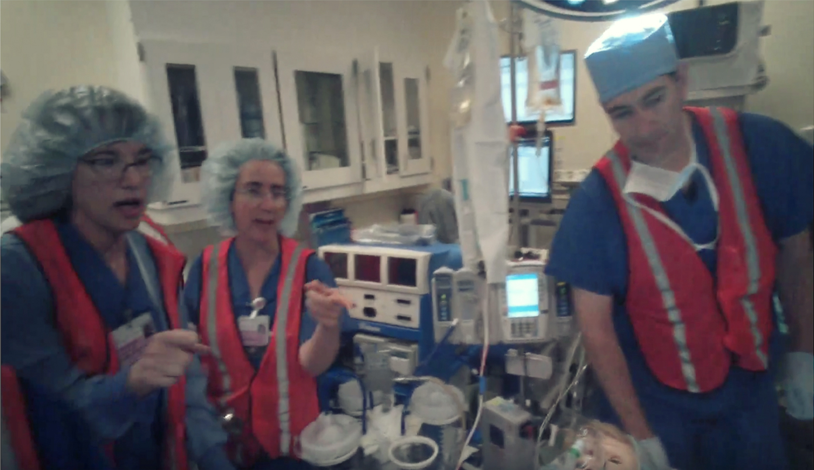
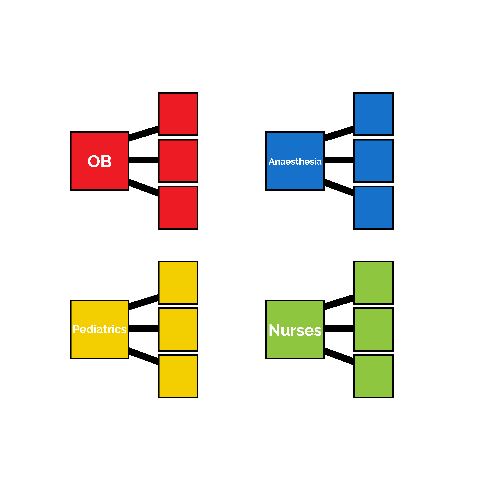
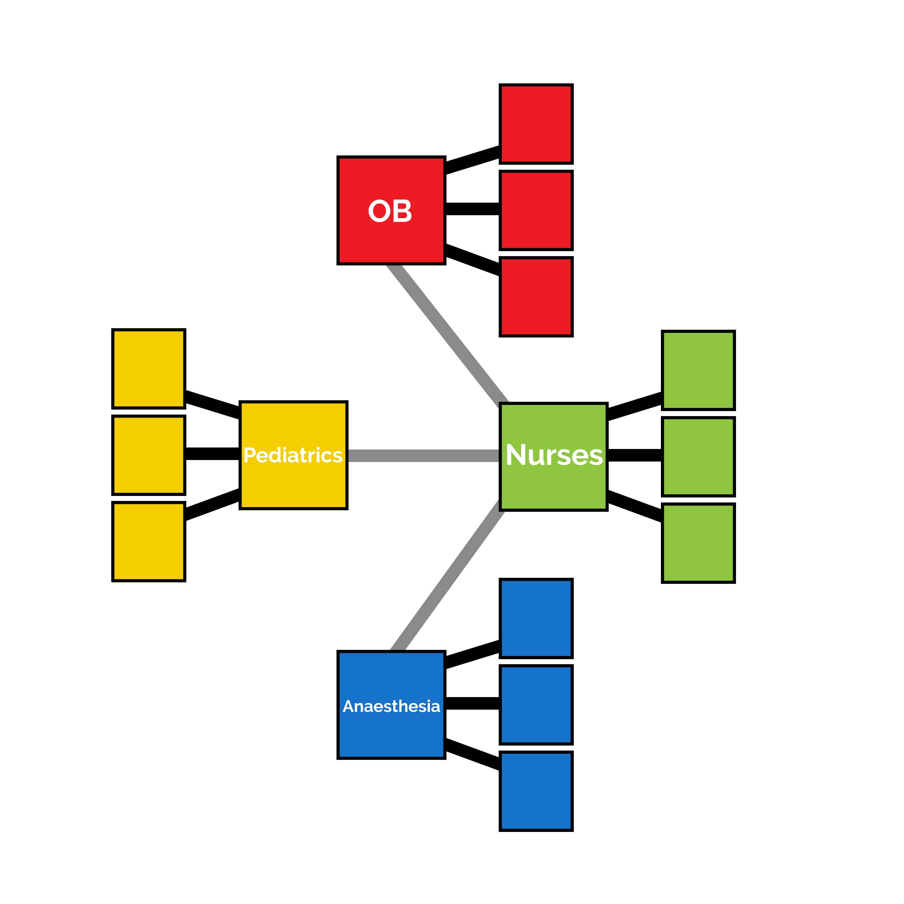
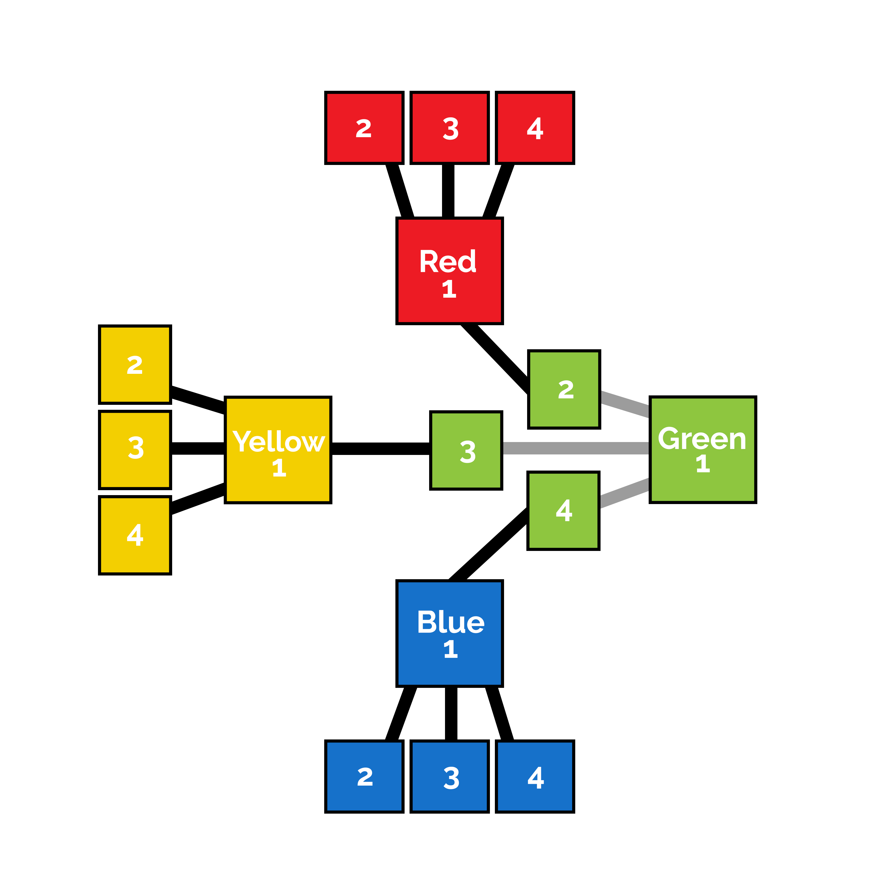
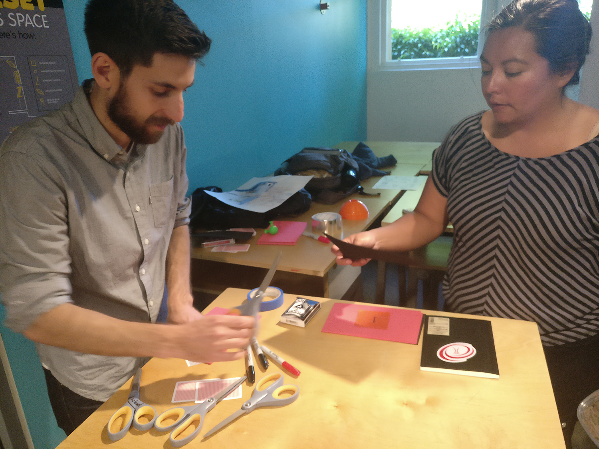
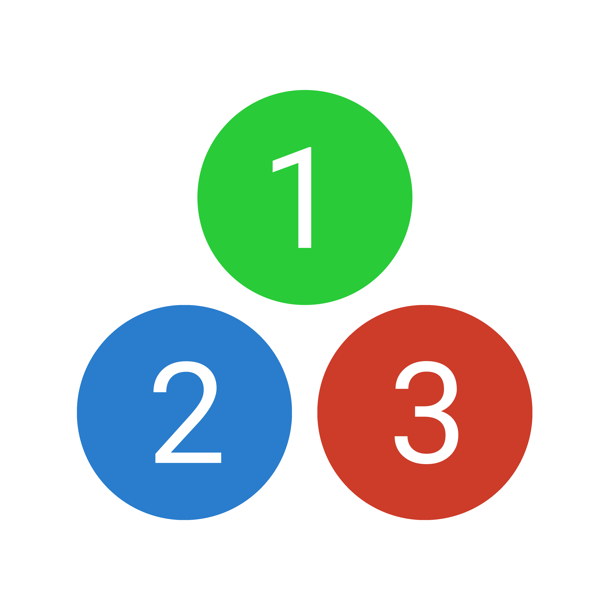
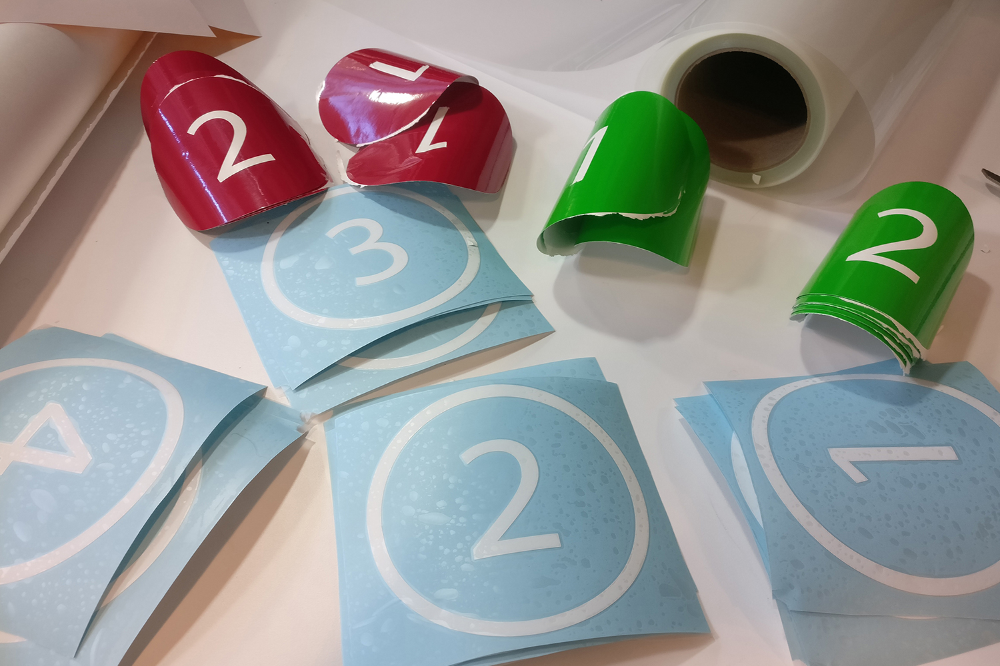
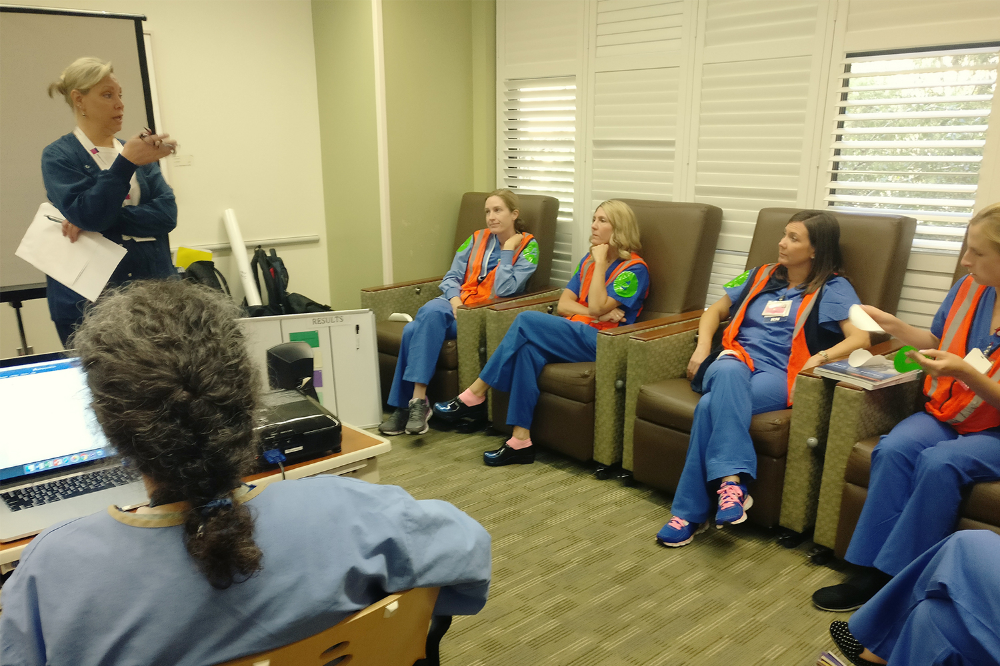
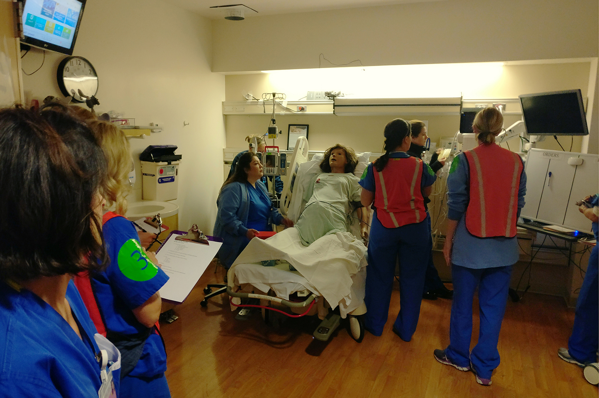
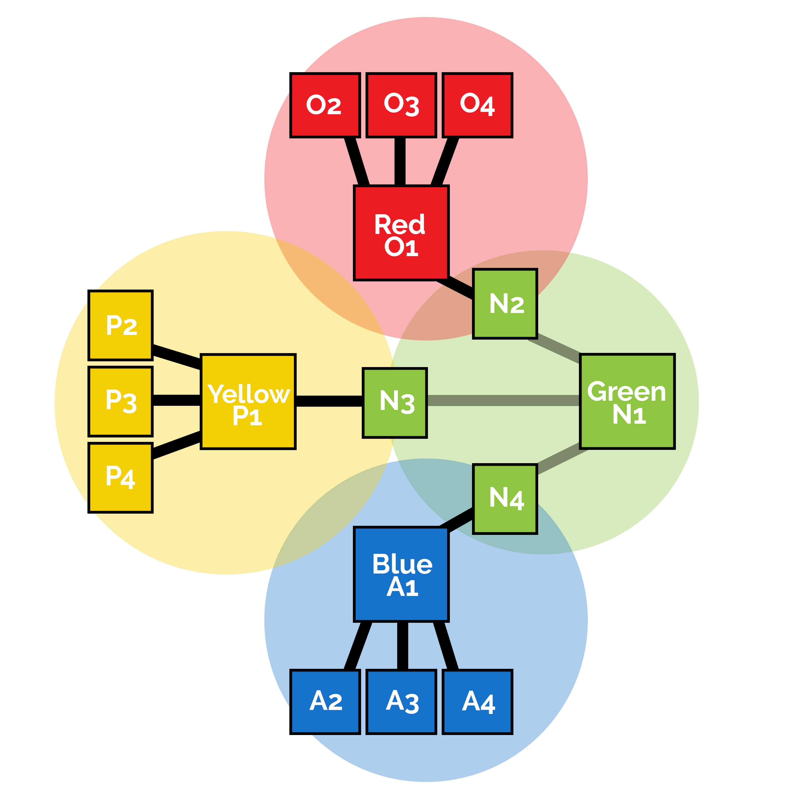

Organizing Complexity in Neonatal Care
I worked with Stanford Hospital to understand, analyze, and streamline delivery room communications in critical scenarios.
3 min skim ⋅ 10 min read
Problem
In a routine delivery, if things go well, there are only a couple people in the delivery room - a doctor and a nurse or two. However, if complications arise many more people are needed - up to ten or twelve in many cases.
These people fit into four roles: Obsetrics / OB, Anesthesia, Pediatrics / NICU, and Nurses. Because of this, the room can become quite chaotic in critical scenarios, when four teams are working side by side with two lives at stake.
Role
I was responsible for leading the design process and working with stakeholders across the neonatal division. I conducted initial discovery and research as well as communications and system design.
Deliverables
I delivered a robust protocol system and presented it to the division.
Process
My design process for this project was one of iteration in all verticals - problem statement, mental model, prototype, and results. Keep scrolling to watch the story unfold.
1
Consider a delivery room.
In a routine delivery, only a couple people are needed in the delivery room - a doctor and a nurse or two - to deliver the baby successfully.
However, if complications arise, many more people are needed, to contain and manage potentially critical scenarios - if a c-section is required, the baby is premature, or a myriad of other possibilities. In these scenarios, up to ten or twelve people are needed in the same room.
These people are split into four roles:
This can become quite chaotic in critical scenarios, when four teams are working side by side in a crowded room.
This was the scenario that I tackled, along with a team of medical staff in the neonatal department at the Stanford Hospital.
2
The first step was to understand the problem. I conducted observation sessions in the simulation room to assess the situation and identify pain points. Most of the live work for this project was conducted in the simulation room due to medical privacy and ethics regulations.
Research goal:
Gain a background understanding of the operational challenges of a critical delivery room scenario
Research method:
Observed simulations of a difficult delivery involving 8-12 medical trainees
Research results:
Each simulation was scripted to follow a delivery unfolding in real time, in which team members are called for as needed. I tried to follow the parallel lines of communication and activity that were taking place. My initial impression was that it was very difficult to follow. All participants were in uniform, so tracking roles and communication lines was difficult, especially because new people were constantly entering the room. When each participant entered the room, they would initiate a flurry of activity - introductions, briefings, and instructions. However - there was no set protocol for these interactions, the briefings were not comprehensive, and because of this they were often repeated. Essentially, the transfer of information was inefficient and redundant.
From these insights, I set a problem statement to drive the initial direction of our work:
"How might we eliminate redundancies in information transfer in the delivery room?"
This set the frame for the project, and I was able to move into the design phase.
3
Watching the simulations felt like watching sports teams, except all players were wearing the same blue uniform. This insight led to our first direction - to set a visual protocol using color.
Each team had a team lead. For the first three, this was the attending physician. For the nurses, this was the primary nurse. In the delivery room, I found it very confusing trying to keep track of roles, so I assigned a color to each team.
Using this, I created a simple baseline mental model illustrating the teams, the team leads, and the colors. My hunch was that using color to make roles immediately obvious would lessen associated cognitive load.
Next, we conducted a series of interviews with team members.
Research goal:
Understand the dynamics and constraints of the problem
Research method:
Conducted ethographies with doctors and nurses who work in a delivery room in a diverse variety of roles.
Research results:
We understood the nature of complexity in the delivery room and identified significant insights that were used to frame the rest of the project. Specifically, the results from two interviews were significant in driving our direction.
Interviewee: Irene, M.D.
Hospitalist
A hospitalist is a specialist trained to administer care for patients and handle many different situations. They are called in critical situations and work with the team in capacities depending on necessity and background.
According to Irene, roles change a lot in the delivery room. This is because situations can change significantly throughout the course of the operation - new information and problems arise, requiring reassessment of priorities and reformulation of strategy. Because of this, role changes are inherent to the situation.
Interviewee: Lorena, R.N.
Fetal Intervention Nurse Coordinator
As a charge nurse, Lorena assigned nurses to different teams and situations as they occurred. Nurses operate semiautonomously, assisting various teams as well as the Primary Nurse.
With Lorena, I asked her to explore the dynamics of information transfer in a changing environment. She talked about how roles change as the situation does - hospitals are always understaffed, so when critical issues arise that require immediate attention, roles will follow - demand vastly outstrips supply.
A simple example
Initially, two nurses are assigned to handle care above the waist (ATW) or below the waist (BTW). These roles are not only balanced, so one of the two may begin a different role when a lull occurs on their side. When care is required again, the original role needs to be filled again, and a new nurse is called and assigned to the situation. Introductions and briefings ensue. Because this is reactive, confusion often occurs. We realized that without a robust mental model, changing roles create confusion.
Our focus was on redundant communications, so I decided to assign a centralized information source. I took the baseline mental model and made adjustments accordingly. We wanted a central point that would conduct briefings and serve as a conduit of complete information. The Primary Nurse was one of the only members that regularly communicated with all teams, so I assigned that role to the primary nurse.
4
Next, I extracted the dynamics of the problem from its context in search of analogous situations. We searched a case in which:
I drew an analogy with military communications. In a military operation, soldiers undertake high-pressure missions in which failure can result in significant loss of life, and split-second decisions are necessary for success. I decided to talk to people with experience in military roles.
Research goal:
Obtain insights from the analogous situation of military communications
Research method:
Conducted ethographies with ex-military individuals.
Research results:
Of the ethnographies, one produced insights that significantly guided our search for a solution.
Interviwee: Anne
Navigator, US Navy Dept. Director, NSW
Anne spent 15 years as a navigator, working on the bridge to bring large Navy ships into foreign ports.
As a navigator, Anne was responsible for working under the captain on the bridge of a ship when entering port. Foreign ports have very different laws, languages, and customs, as well as terrain that is often invisible over the surface of the water. The bridge could contain up to 15 different individuals in diverse capacities who coordinate and communicate with each other constantly to bring a ship into port.
I asked Anne to talk about a memory in which the situation became chaotic, and she responded that she could not recall a single one in fifteen years. When speaking on the bridge, each individual would preface their report with a identifier - indicating exactly whom the information was targeted towards. Thus, individuals could tune into and out of communications as necessary or desired, instead of keeping a parallel mental channel open for all communications.
I decided to revise our problem statement:
"How might we create robust visual and communications protocols to reduce confusion and streamline information transfer?"
With new insight, I took the mental model and made adjustments accordingly. Each participant was now assigned a color and a number. The lead of each team (attending physician, primary nurse) was assigned the number ‘1’, and all other numbers were assigned in the order of arrival. Since nurses work with different teams, each nurse is connected to the team they are assisting, and report to the primary nurse.
Here, the visual/communications protocol began to take shape. Each participant would wear stickers with their color and number. Participants would preface their communications with their target, for example: “Blue team” for anesthesia, or “Red one” for attending OB, instead of using names. There was no need to remember names, faces, or roles, and a quick visual sweep was all that was necessary for full identification.
5
We wanted to quickly validate without being bound to a sporadic simulation schedule. The method was analogous situation in the form of a card game.
Rules of the game were chosen to be analogous to the delivery room scenario:
Research goal:
Validate the color-number protocol w.r.t. cognitive load in a low-overhead way (without scheduling simulation time
Research method:
Two rounds of the game were played for each audience. In the first, participants were asked to refer to each other by name only - this was the control. In the second, participants were instructed to use their respective assigned number-color combinations to refer to each other.
Research results:
We conducted a few trials with different groups of players, and I interviewed each participant afterwards. Participants expressed how the second iteration was not significantly more efficient in time, but it was more comfortable to use codenames and easier to focus on the task instead of remembering the name of someone they had just met.
Results from the first prototype were encouraging, so we proceeded with a full prototype in simulation.
 Research goal:
To observe the color-number system in action in a delivery scenario.
Research method:
We scheduled a full simulation in the sim room and got approval from hospital administration to test the prototype in it. Stickers were created that were to be placed on the shoulders of participants. The simulation had three teams: OB, Anesthesia, and Nurses.
Research results:
Before the trial, I gave a briefing explaining the protocol. Total time was 15 minutes, during which the communications identifier was only used twice. I interviewed a few participants after the trial.
 When questioned about communications protocol use, participants expressed that it was “a little awkward” because they already knew each other’s names and were all friends. This is different from a live scenario, where most participants would not know each other. However, feedback was positive - participants expressed that the visual cues were extremely helpful and that having the mental model in place made things less stressful. They indicated that the stickers were small, and placement made them difficult to see.
6
With this feedback, I created a final iteration. Stickers were enlarged and location was moved to the chest and back area. Because of lighting changes and potential issues with colorblindness, a small letter code was added to either side of the number on the decal.
The mental model was revised to reflect the letter code. Additionally, we observed that communications roughly followed the lines we had implemented, but they were not rigid - so I updated the mental model to include spheres of communication.
7